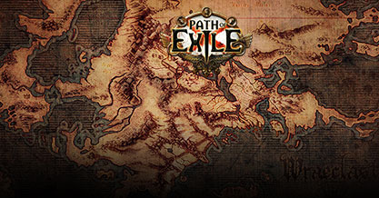
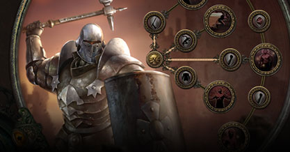
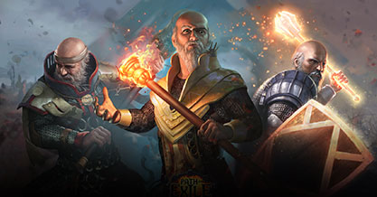
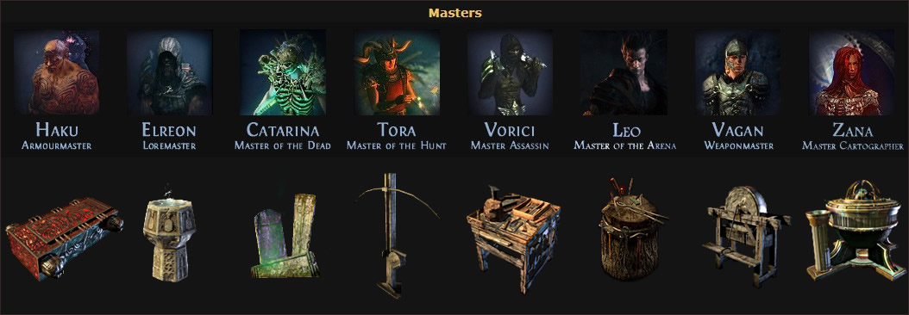

Path Of Exile Master Missions Guide - Intro | Crafting | Daily | Tips
Date: Nov/05/18 04:16:30 Views:143
-

POE Builds-Collects useful POE resources & provides structured build data.
-

POE Builds-Collects useful POE resources & provides structured build data.
-

POE Builds-Collects useful POE resources & provides structured build data.
-

POE Builds-Collects useful POE resources & provides structured build data.
-
POE Builds-Collects useful POE resources & provides structured build data.
This is an explanation of the Master Missions on Wikipedia. Let's take a closer look at how the Master Missions affects the player's experience in the game.
Since the Path Of Exile update the Master Missions, many players are complaining about the cumbersome of the Master Missions, which seems to force the player to complete some missions they do not want to accept. And most of them seem is a major interruption to the flow of gameplay. However, the Hideout related to the master missions has been affirmed by many people. The following will give a more detailed information about the master task to help better accomplish these tasks.
What is Master Missons
The forsaken masters are eight NPCs that randomly spawn in Wraeclast and offer the player missions. In exchange for completing these missions, players will be granted a hideout and exclusive crafting options. Each master specializes in crafting for a specific type of item and has his own style of missions, as well as
This is an explanation of the Master Missions on Wikipedia. Let's take a closer look at how the Master Missions affects the player's experience in the game.
First, you always meet the masters somewhere in the wilderness. When you have done the first task for them, they come to the camp of the respective act. Except for Zana - that is then on the Eternal Device in theSolaris Temple.
For each task that you solve for the Masters, you get Experience Points, which will be charged here as Reputation. One could therefore speak of "reputation" points. When you have achieved a certain amount of reputation with a master, the master increases one level or offers new options to the player. It is important to know that the Masters expect different levels of favors until they reach the next level: The fastest for the Masters of Act1, Zana is the most demanding.
By chance you meet in the rest of the game somewhere in the level areas again and again on the masters, they offer a constantly new tasks, so you can level them steadily higher. If you do not succeed in solving a task, that does not matter: the reputation does not sink if you accept a task but fail. So you can basically accept any task, even if you are not sure if you can do it at all (or want). But when you have completed a task, you must return to the master in the level area to earn the extra reputation. Incidentally, there is a small logic gap when you meet a master in the wilderness, who is supposed to wait there until he has done his job. If you come to the respective camp or hideout before completing the task, the same master is also around there.
Master mission challenge
What is Master Missons
What is Master Missons
A few remarks about the missions of the masters, especially about Zana's missions:
Overall, the missions of the masters are quite unimaginative / simple / boring / annoying / quickly done. At least with the normal masters
Haku, Armourmaster
The most difficult / dangerous missions for me so far were the missions of Haku. For each one you have to get a Karui spirit from a dungeon, often under time pressure. The spirit may be located
- In these dungeons are again quite often
- In these dungeons are again quite often
- In these dungeons are again quite often
In these dungeons are again quite often immortal totems that violate the player character significantly with their elemental attacks and in particular can slow down / chill. Types of locomotion such as teleporting or jumping are possible in these dungeons - but only as long as you do not have the Karui Spirit under your belt. Since you can be threatened by other sources of danger as soon as you transport it (killed opponents rebuild, boulders fall from above ...), such missions, especially on higher-level maps, are not really the risk - in relation to the reward by a few reputation points - worth.
Elreon, Loremaster
Elreon's missions are simpel, at least if you have a character who can quickly deal large area damage. You must defend a relic over a period of time or until you have killed a certain number of enemies. Or you must feed souls (50) to the relic. The feed radius is shown with a golden circle.
Enemy waves include
- In these dungeons are again quite often
- In these dungeons are again quite often
- In these dungeons are again quite often
- In these dungeons are again quite often
Catarina, Master of the Dead
Catarina's tasks are sometimes simple, sometimes annoying. They are annoying when you need to escort revived monsters through a map to a statue or to Catarina himself. Because constantly new enemies are spawning around these monsters and the monsters to be escorted are attacking these opponents, instead of running behind the player character. That really sometimes turns into annoying Pied Piper work and in such cases I like to renounce the reputation points. Catarina will probably be the last master I want to level beyond level 6 in my hideout.
Catarina, Master of the Dead
Catarina's tasks are sometimes simple, sometimes annoying. They are annoying when you need to escort revived monsters through a map to a statue or to Catarina himself. Because constantly new enemies are spawning around these monsters and the monsters to be escorted are attacking these opponents, instead of running behind the player character. That really sometimes turns into annoying Pied Piper work and in such cases I like to renounce the reputation points. Catarina will probably be the last master I want to level beyond level 6 in my hideout.
Crafting & Daily & Shop
Zana - Master Cartographer
| Firstname | Lastname |
|---|---|
| Anna | Pitt |
| Anna | Pitt |
| Anna | Pitt |
| Anna | Pitt |
Transportation – Chasing down some transport convoy and taking out its guards.
Fortification – Attacking a fortified structure and trying to kill the leader.
Research – Racing to the inner-most area of the Safehouse and stopping the leader from destroying vital intelligence.
Intervention – A random Assassin has been sent against you, this will happen periodically as you make progress.
| Syndicate | Item | Cost | Max Rank Mod |
|---|---|---|---|
| Aisling | ring | 4 chaos | (14–16)% increased Chaos Damage; (14–16)% increased Global Physical Damage |
| Cameria | ring | 4 chaos | +(21–23)% to Critical Strike Multiplier if you've Shattered an Enemy Recently; (14–16)% increased Global Critical Strike Chance |
| Elreon | ring | 1 exalted | (-9–-8) to Total Mana Cost of Skills |
| Gravicius | body armour | 4 chaos | Gain 10% of Maximum Life as Extra Maximum Energy Shield |
| Guff | gloves | 4 chaos | (24–28)% increased Damage during any Flask Effect |
| Haku | weapon, shield | 1 exalted | +(7–8)% to Quality of Socketed Gems |
| Hillock | body armour | 4 chaos | 6% increased Attributes |
| It That Fled | weapon | 4 chaos | (64–75)% increased Spell Damage; Gain 12% of Non-Chaos Damage as extra Chaos Damage --or-- (43–50)% increased Spell Damage; Gain 6% of Non-Chaos Damage as extra Chaos Damage |
| Janus | helmet | 4 regal | (41–45)% increased Rarity of Items Dropped by Slain Rare or Unique Enemies |
| Jorgin | amulet | 3 chaos | 10% Chance to Trigger Level 18 Summon Spectral Wolf on Kill |
| Korell | helmet | 1 divine | (7–8)% of Physical Damage from Hits taken as Fire Damage |
| Leo | ring, belt | 1 exalted | (17–20)% increased Damage |
| Riker | ring | 4 chaos | (14–16)% increased Fire Damage; (14–16)% increased Lightning Damage |
| Rin | boots | 4 chaos | Cannot be Frozen |
| Tora | weapon | 4 chaos | Adds (14–16) to (17–20) Physical Damage; 40% chance to cause Bleeding on Hit --or-- Adds (9–11) to (12–14) Physical Damage; 40% chance to cause Bleeding on Hit |
| Vagan | weapon | 3 exalted | Hits can't be evaded |
| Vorici | gloves, amulet | 1 exalted | (37–43)% increased Damage while Leeching |
| Mastermind | weapon, shield | 1 exalted | +2 to Level of Socketed Support Gems |
4 x Path of Exile Exalted OrbGood site
- Sep/18/2018 01:22:27
4 x Path of Exile Exalted OrbGood site
- Sep/18/2018 01:22:27
4 x Path of Exile Exalted OrbGood site
- Sep/18/2018 01:22:27
4 x Path of Exile Exalted OrbGood site
- Sep/18/2018 01:22:27
4 x Path of Exile Exalted OrbGood site
- Sep/18/2018 01:22:27
4 x Path of Exile Exalted OrbGood site
- Sep/18/2018 01:22:27
4 x Path of Exile Exalted OrbGood site
- Sep/18/2018 01:22:27